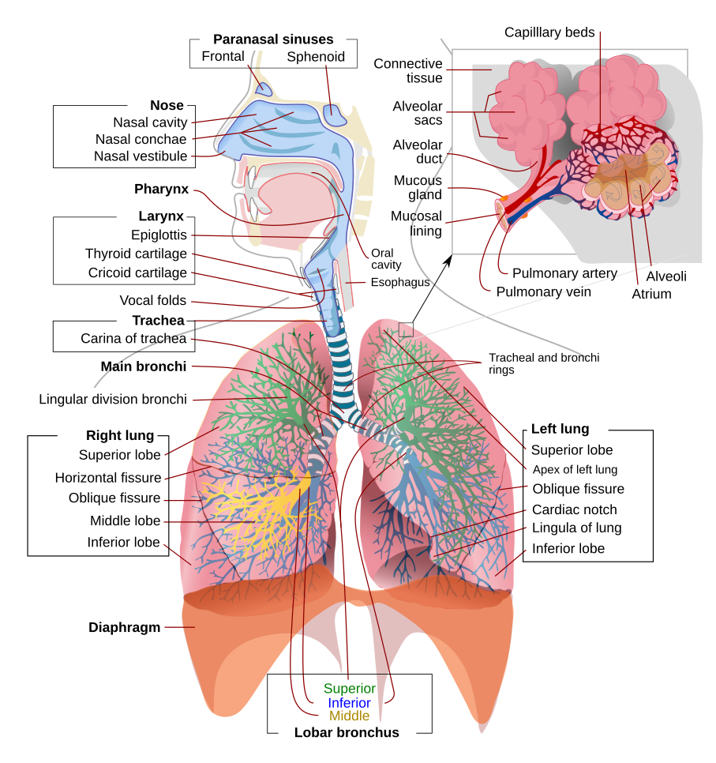
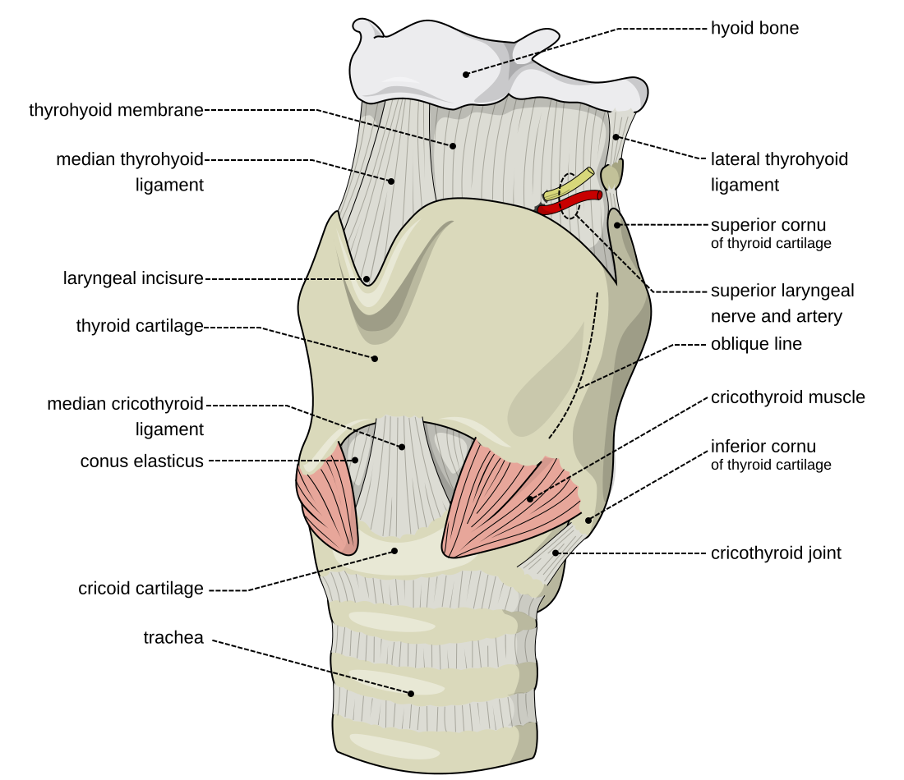
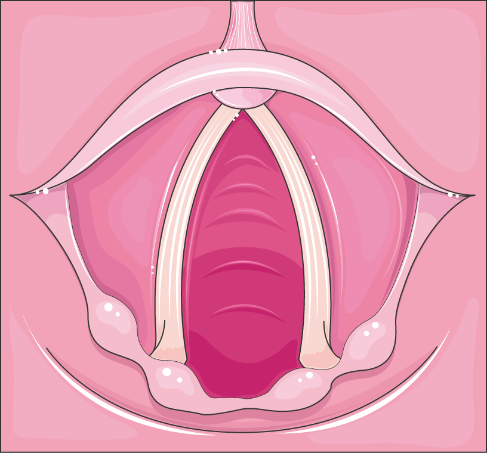
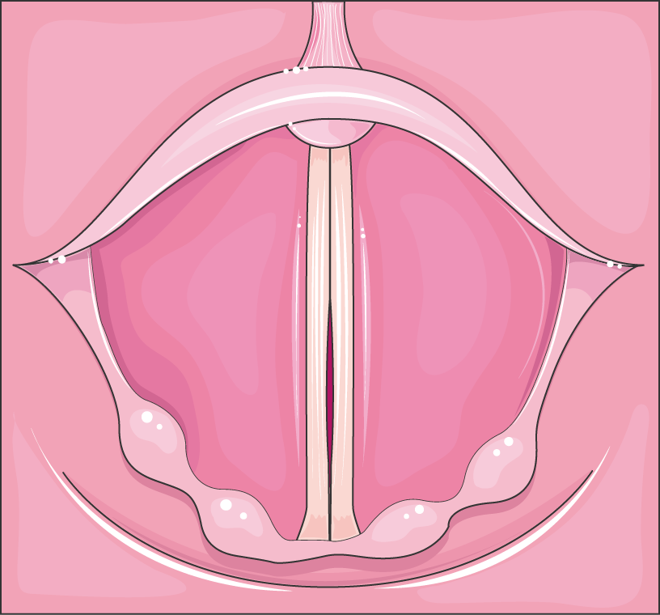
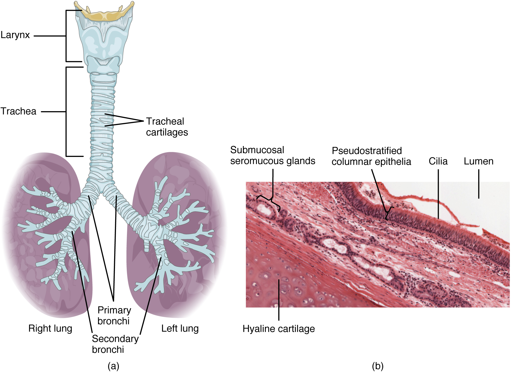

"Every airway manoeuvre — mask seal, laryngoscopy, supraglottic placement, cricothyroidotomy — is applied anatomy. The airway is conventionally divided at the vocal cords into an upper (conducting) airway you can see and instrument, and a lower (tracheobronchial) airway you confirm and protect."
Synthesised from Miller's Anesthesia — Airway Management; Morgan & Mikhail's Clinical Anesthesiology.
The upper airway
- Nose & nasopharynx — warms, humidifies and filters gas; the route for nasal intubation and NPAs (beware the turbinates and the adenoids).
- Oral cavity & oropharynx — the tongue is the commonest cause of obstruction in the unconscious patient; the palatine tonsils and soft palate frame the Mallampati view.
- Hypopharynx & larynx — the epiglottis, aryepiglottic folds, and the glottis (the vocal cords and the space between them — the narrowest point in the adult airway). The larynx sits at C3–C6.
- Laryngeal cartilages — the unpaired thyroid, cricoid and epiglottis and the paired arytenoid, corniculate and cuneiform cartilages. The cricoid is the only complete ring — the landmark for cricoid pressure (Sellick's manoeuvre). The cricothyroid membrane, between the thyroid and cricoid cartilages, is the site for emergency front-of-neck access.



Innervation of the larynx — in depth
All laryngeal innervation comes from two branches of the vagus (CN X): the superior laryngeal nerve (SLN) and the recurrent laryngeal nerve (RLN). This is high-yield because it explains hoarseness, aspiration and post-thyroidectomy stridor — and it is exactly what you block for an awake intubation.
| Nerve | Motor supply | Sensory supply | Effect of injury |
|---|---|---|---|
| SLN — external branch | Cricothyroid muscle (the only tensor of the cords) | — | Weak, easily-tired voice; loss of high pitch (classically the "Amelita Galli-Curci" opera-singer lesion). At risk with the superior thyroid artery in thyroidectomy. |
| SLN — internal branch | — | Mucosa above the cords — supraglottis, epiglottis, vallecula, upper surface of the cords (pierces the thyrohyoid membrane) | Loss of sensation → impaired cough / aspiration risk. This is the nerve targeted by the SLN block for awake intubation. |
| Recurrent laryngeal nerve (RLN) | All intrinsic laryngeal muscles except cricothyroid — importantly the posterior cricoarytenoid, the sole abductor ("the only muscle that opens the airway") | Mucosa below the cords — subglottis and upper trachea | Unilateral: hoarseness, cord in the paramedian position. Bilateral acute (e.g. thyroidectomy): both cords adducted/paramedian with unopposed cricothyroid → stridor and airway obstruction — may need re-intubation. |
- Left RLN has a long thoracic course (loops under the arch of the aorta) — hence hoarseness from a left hilar tumour, aortic aneurysm or mitral enlargement (Ortner's syndrome). The right RLN loops under the right subclavian artery.
- Semon's law — in a progressive RLN lesion the abductors (posterior cricoarytenoid) fail before the adductors, so the cord drifts towards the midline.
- Awake-intubation blocks: glossopharyngeal (CN IX) for the tongue base/oropharynx (gag), SLN block for supraglottis, and a transtracheal / recurrent laryngeal block (via the cricothyroid membrane) for the subglottis and trachea — plus topical local anaesthetic.
The lower airway & the bronchial tree
- Trachea — ~10–12 cm long, 16–20 C-shaped cartilage rings anteriorly with a posterior membranous wall; runs from the cricoid (C6) to the carina at ~T4–T5 (the sternal angle of Louis).
- Why the right main bronchus matters — it is wider, shorter and more vertical (leaves the trachea at roughly 25° from the midline versus about 45° on the left). So a tube pushed too far, an aspirated foreign body, and inhaled fluid all preferentially enter the right lung — and typically the right lower lobe in the upright patient.
- Consequences at the bedside — endobronchial (usually right-main) intubation causes left-lung collapse, one-lung ventilation and desaturation; confirm the tube tip sits 2–4 cm above the carina and listen for equal bilateral air entry.
- Distal tree — main → lobar → segmental bronchi → bronchioles → terminal & respiratory bronchioles → alveolar ducts and alveoli (the conducting airways become respiratory at the respiratory bronchiole).

Paediatric vs adult airway
The infant airway is not a small adult airway. These differences change how you position, which blade you choose and how quickly the child desaturates.
Adult airway
- Larynx at C5–C6
- Glottis is the narrowest point — cylindrical subglottis
- Flat, firm epiglottis → Macintosh (curved) blade
- Proportionate tongue & occiput; sniffing position needs a head-ring
- Longer trachea → more margin before endobronchial intubation
- Larger FRC relative to O₂ demand → slower desaturation
Paediatric airway (infant)
- Larynx higher & more anterior (C3–C4)
- Cricoid ring the functionally narrowest point (classic teaching) → historically uncuffed tubes
- Long, stiff, Ω-shaped epiglottis → straight (Miller) blade to lift it
- Large occiput (natural flexion — a shoulder roll helps) and large tongue
- Short trachea → easy endobronchial intubation & accidental extubation
- High O₂ consumption + small FRC → rapid desaturation; neonates are obligate nasal breathers
MRI/bronchoscopy studies suggest the paediatric airway may actually be narrowest at the glottis, and is elliptical rather than a perfect funnel — but "cricoid = narrowest in children" remains the standard exam answer. Low-pressure cuffed tubes (with cuff-pressure monitoring) are now widely used in children, superseding the old uncuffed rule.